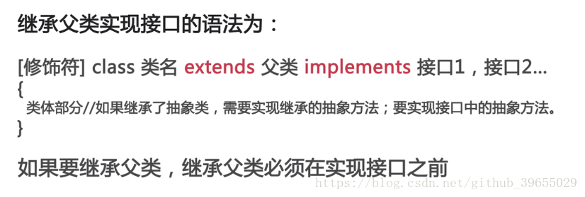

JAVA知识点总结篇（三）原文出处:本文由博客园博主村雨1943提供。
原文连接:https://www.cnblogs.com/cunyu1943/p/11605929.html
抽象类
- 使用规则
- abstract定义抽象类；
- abstract定义抽象方法，只有声明，不需要实现；
- 包含抽象方法的类是抽象类；
- 抽象类中可以包含普通方法，也可以没有抽象方法；
- 抽象类不能直接创建，可以定义引用变量；
接口
- 定义：一种特殊的类，由全局常量和公共的抽象方法所组成；
- 类是一种具体实现体，而接口定义了某一批类所要遵守的规范，接口不关心这些类的内部数据，也不关心这些类中方法的实现细节，它只规定这些类中必须提供某些方法；
- 接口使用：一个类可以实现一个或多个接口，实现接口使用implements关键字。Java中一个类只能继承一个父类，可以通过多个接口做补充；

UML
- 定义：统一建模语言或标准建模语言，是一个支持模型化和软件系统开发的图形化语言，为软件开发的所有阶段提供模型化和可视化支持；
异常
- 处理运行时异常时，采用逻辑去合理规避同时辅助try-catch处理；
- 在多重catch块后面，可以加一个catch(Exception)来处理可能被遗漏的异常；
- 对于不确定的代码，也可以加上try-catc，处理潜在的异常；
- 尽量去处理异常，切忌只是简单的调用printStackTrace()去打印输出；
- 具体如何处理异常，要根据不用的业务需求和异常类型去决定；
- 尽量天剑finally语句块去释放占用的资源；
字符串
- String对象创建后不能被修改，是不可变的，所谓的修改其实是创建了新的对象，所指向的内存空间不同；
- 每次new一个字符串就是产生了一个新对象，即便两个字符串的内容相同，使用"=="比较时也为
false，若只需比较内容是否相同，应使用eauals()方法；
==和equals()的区别
==判断两个字符串在内存中首地址是否相同，即判断是否同一个字符串对象；equals：比较存储在两个字符串对象中的内容是否一致；
- StringBuffer是线程安全的，而StringBuilder则没有实现线程安全功能，所以性能更高；
包装类
时间
- 调用
SimpleDateFormat对象的parse()方法时可能会出现转换异常，即ParseException，因此需要进行异常处理；
- 使用Date类时需要导入
java.util包，使用SimpleDateFormat时需要导入java.text包；
- 调用
Calendar获取月份时，月份是从0开始的；
Math类
Math位于java.lang包中，包含用于执行基本数学运算的方法，类中所有方法懂事静态方法，可以直接使用类名.方法名()；
集合框架
- 定义：一种工具类，就像是容器，储存任意数量的具有共同属性的对象；
- 作用
- 在类的内部，对数据进行组织；
- 简单而快速的搜索大数量的条目；
- 有的集合接口，提供一系列排列有序的元素，且可以在序列中间快速插入或者删除有关元素；
- 有的集合接口，提供映射关系，可以通过关键字(key)去快速查找到对应的唯一对象，而这个关键字可以是任意类型；
- 数组与集合区别
- 数组长度固定，集合长度可变；
- 数组只能通过下标访问元素，类型固定，而有的集合可以通过任意类型查找所映射的具体对象；
- Collection接口
- 是List、Set、Queue接口的父接口；
- 定义了可用于操作List、Set、Queue的方法--增删改查；
- List接口及其实现类--ArrayList
- List是元素有序且可重复的集合，被称为序列；
- List可以精确控制每个元素的插入位置，或删除某个位置元素；
- ArrayList--数组序列，是List的一个重要实现类；
- ArrayList底层由数组实现；
- Map接口
- Map提供了一种映射关系，其中的元素是以键值对
(key-value)的形式存储的，能够实现根据key快速查找value；
- Map中的键值对以Entry类型的对象实例形式存在；
- 键(key)不可以重复，value可以；
- 每个键最多只能映射到一个值；
- Map接口提供了分别返回key值集合、value值集合以及Entry(键值对)集合的方法；
- Map支持泛型，形如：Map<K,V>；
- HashMap类